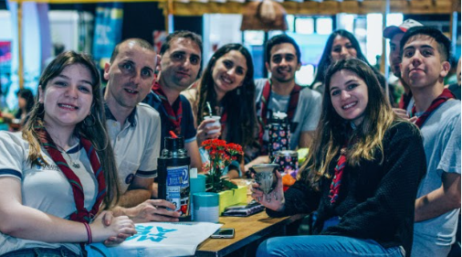

¿QUIENES SOMOS?
Mates Cancheros nace de las ganas de querer acercar a los apasionados del Fútbol, insumos característicos a todos los hinchas futboleros, priorizando la calidad y el precio.
Somos una familia matera, que se encarga de brindarte los mejores insumos Cancheros para todas tus necesidades. Nos caracterizamos por tener buena calidad en nuestros productos y muy buena atención.
Nos enfocamos en los detalles y en la atención personalizada para poder brindar un servicio cálido y eficiente. En Mates Cancheros no solo ofrecemos insumos materos sino también productos que conllevan historias, leyendas, buenos momentos y costumbres de nuestros pasado, presente y futuro.
